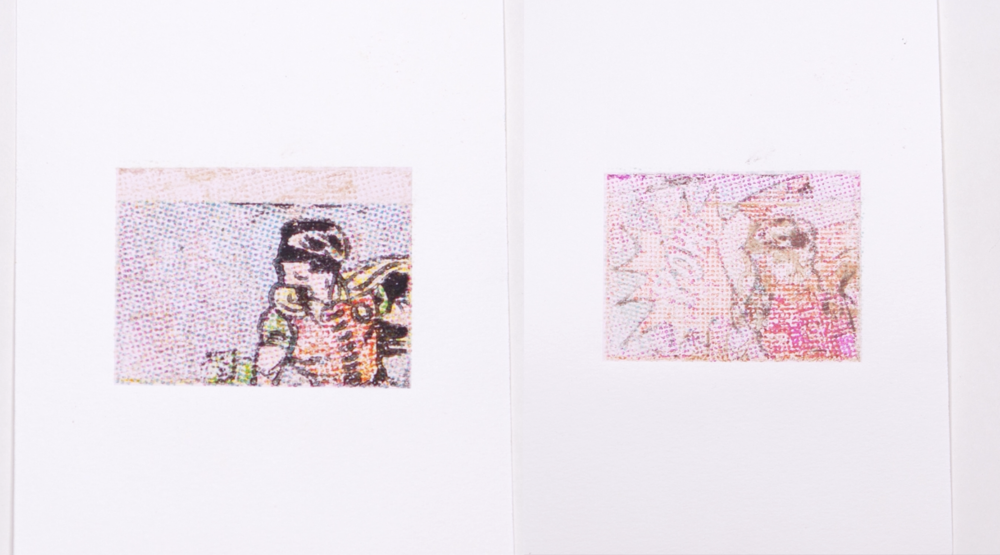
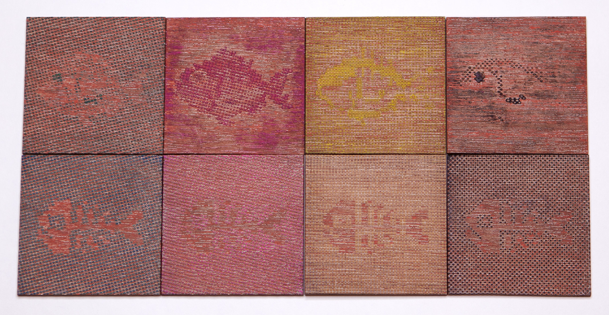
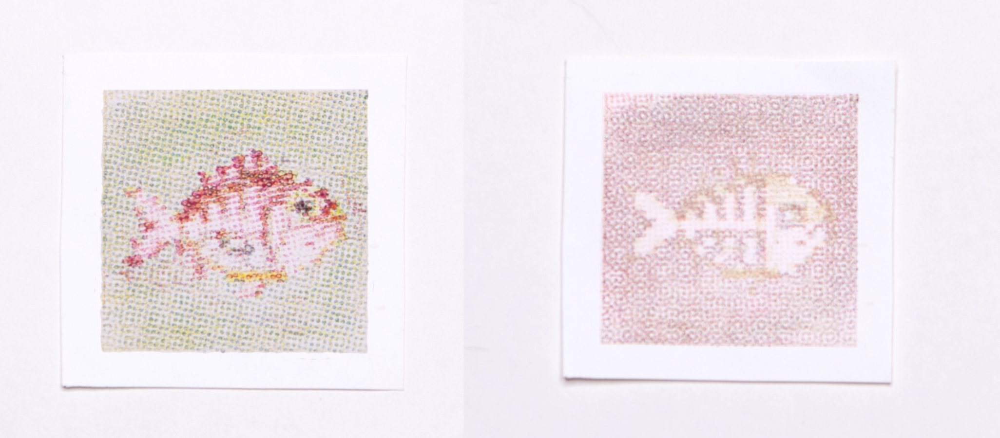
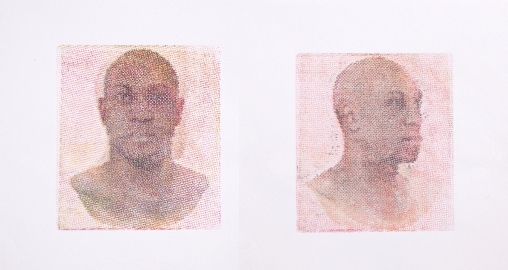

Publication
Ticha Sethapakdi, Paris Myers, Tianyu Yu, Juliana Covarrubias, Mackenzie Leake, Stefanie Mueller.
Thermochromorph: Dynamic Relief Printing with Thermochromic Inks
In Proceedings of SIGGRAPH Asia'24 Art Papers.
DOI Video Code
MIT News Video
Press
Thermochromorph: Dynamic Relief Printing with Thermochromic Inks


Thermochromorph is a novel relief printing technique that produces multicolored images that transition into each other through changes in temperature. Our process utilizes two sets of CMYK thermochromic inks that exhibit complementary color-changing behaviors: one shifting from color to transparency, the other from transparency to color at the same activation temperature. We describe our printmaking workflow, provide an open-source software toolkit, showcase prints made with our system, and facilitate an artist workshop. By incorporating new materials and technology with the rich history of printmaking, our work extends the expressive capabilities of relief printing as the medium continues to evolve.
INTRODUCTION
Both digital and analog printmaking continue to offer opportunities for exploration in materials and technology. Relief printing is a form of analog printmaking that involves carving a design into a block of material, applying ink or pigment to the carved block, and then transferring the image onto paper or another surface. The relief printing process has three core components: the printing matrix (i.e., the block), the printing surface, and the ink. The practice of substituting materials in these components can have a significant impact on the affordances and outputs. Artists and practitioners have explored using different materials to create the printing matrix, from synthetic materials such as linoleum and rubber, to natural materials such as fruits and vegetables. Similarly, practitioners have explored printing on different surfaces, such as fabric and clay. In this paper, we explore how changing the ink can alter the dynamics of relief printing. We propose that thermochromic inks, which change color through temperature, can make relief prints more visually expressive and physically interactive.
Artists have experimented with different methods and techniques for the relief print creation process. In particular, a number of contemporary printmakers have developed hybrid methods which combine the time-honored traditions of the craft with the affordances of modern digital tools. For example, Katsutoshi Yuasa combined digital CMYK imaging techniques with hand-carved Mokuhaga block printing to create intricate prints with photographic detail, while Mike Lyon developed custom software and used CNC machining to create blocks.
In a similar vein, we create our thermochromic prints using digital processes (via CMYK imaging and laser cutting) supplemented with analog techniques (via manual printmaking and thermochromic inks). Our software design tool and chosen imaging process establish a groundwork of predictability, while the printing process and inks introduce serendipity into the final outputs.
In contrast to commercial offset lithography, which yields predictable and uniform outputs, handmade prints are unique due to the inherent imperfections of the manual printmaking process---raising questions of repeatability and reproducibility. Unlike standard prints, thermochromic prints are also dynamic: images can now transition into each other, and the way they transition varies depending on how heat is applied. This facilitates a viewing experience that changes in response to touch or different ambient conditions.
Thermochromic inks have seen a range of applications in Computer Graphics and Human-Computer Interaction research. For instance, Anabiosis and Electronic Origami demonstrate how thermochromic inks can be used to make paper more interactive, whereas Ebb, Eunoia, and Social Textiles are examples of color-changing textile displays made from threads coated with thermochromic paint. ChromoSkin and DuoSkin showed how thermochromic inks can even be used to make on-skin interfaces. Hennerdal et al. made picture-to-picture transitions possible by screen-printing CMYK thermochromic ink images on top of static ink images. By applying thermochromic inks to an artistic domain, our work broadens our understanding of relief printing's expressive potential and offers insights that may inspire innovative approaches to this time-honored printmaking technique.
WORKING PRINCIPLE
Thermochromorph prints are two multicolored thermochromic images that fade into each other. We achieve this by applying a CMYK-based relief printing method to two types of thermochromic pigments with distinct activation properties. Here we explain the CMYK printing process and then describe the properties of our thermochromic inks.
CMYK Printing
To facilitate the creation of multicolored images, we use CMYK printing. CMYK printing, also known as four-color process printing, is a widely used color reproduction technique in the printing industry. It involves combining four ink color channels: Cyan (C), Magenta (M), Yellow (Y), and Black (K) in varying proportions to create an array of colors.
Converting an RGB digital image into a CMYK-printable image involves first decomposing the image into its constituent C, M, Y, and K channels. Each channel is then converted into a series of halftone dots, which are small, discrete dots of varying size and spacing. Larger and denser dots appear darker, while smaller and sparser dots appear lighter. Compositing these four channels simulates a broad range of hues and shades, making it possible to reproduce full-color images.
Relief Printing
We fabricate the CMYK-printable image via relief printing. In relief printing, the raised areas of the printing matrix hold ink. Since only the non-recessed portions of the matrix come into contact with the printing surface, pressing the inked matrix against the surface leaves an impression of the image. As each block holds only one color at a time, four separate blocks are required to produce a multicolored image in a standard four-color CMYK printing process.
Thermochromic Pigments
Since we want our thermochromic images to fade into each other at the same activation temperature, we sourced two types of thermochromic pigments (from Shenzhen Dongfang Color Technology Co., Ltd.) with complementary color-changing properties:
- Color-to-clear thermochromic pigment, which changes from color to transparent at an activation temperature of 35°C
- Clear-to-color thermochromic pigment, which reverses its visibility from transparency to color under the same activation temperature
For each type, we acquired Cyan, Magenta, Yellow, and Black pigments. In the case of the clear-to-color powder, which did not have yellow, we made an adjustment by substituting it with orange pigment as it was the closest match to the desired color. Additionally, while the vendor offers the same pigments at other activation temperatures, we opted to use pigments with an activation temperature of 35°C since this temperature range aligns more closely with typical environmental conditions and user comfort.
We refer to images printed with color-to-clear pigments as cold images (since they are visible at room temperature) and images printed with clear-to-color pigments as hot images (since they are visible at the activation temperature).
SOFTWARE
To help users navigate the complexity of preparing their blocks, we provide open-source software that converts RGB images into relief printing files and previews their prints (Fig. 2).
Figure 2. The Thermochromorph interface shows a preview of the CMYK halftone for the target image and provides CMYK block thumbnails below the halftone image. Users can switch between (a) cold and (b) hot image previews.
Features
Once the user specifies their input images, the Thermochromorph interface generates and renders the CMYK halftone representations and fabrication files for the hot and cold images (Fig. 1a). Users can switch between previewing the two images by pressing a hot key (Fig. 1b). To help users understand how the image is constructed, the interface shows thumbnails of the four CMYK layers and provides users with the option to toggle the visibility of each individual color layer. This feature is useful during the printmaking process as it allows users to see the intermediate expected outputs for each printing layer.
Our fabrication process supports an image resolution of 50 dots per inch. By default, our software sets the print width to 4.5 inches and produces fabrication files from the default width. Users have the option to adjust the width of their image, which changes the level of detail in the final print (larger widths allow for greater image detail).
Implementation
Our system initially takes the input RGB image and performs a standard color conversion process to extract the CMYK channels. We then rotate each channel by a specified screen angle. Yellow (Y) uses an angle of 0°, Cyan (C) uses an angle of 15°, Magenta (M) uses 75°, and Black (K) uses an angle of 45°. These are standard angles in the printing industry that have been selected to minimize moiré patterns and achieve optimal color separation and reproduction in the final printed output.
Using the rotated CMYK channels, we generate halftone images for each one via amplitude modulated halftoning, which is a technique to convert continuous-tone images into halftone images. The size of the dots is determined by the tone color they represent, with larger dots used for darker tones and smaller dots used for lighter tones. This technique produces a regular grid of dots that splits the original image into a halftone image with different-sized dots.
Our system uses halftone dot widths that span from ε to 2.2ε with a grid cell size of 2ε, where ε represents the smallest dot diameter that the laser can engrave without compromising the shape of the dot (which in our case is 0.02in). After generating the halftone pattern, we rotate the halftone image back to its original orientation.
When generating our fabrication files, we want to engrave the portions of the image that will not receive ink. For each image, we create 'negatives' for each of their CMYK halftones by rendering the dots in white and the background in black, since black represents an engraving operation for our laser cutter (ULS PLS 6.150D). Since relief printing produces a mirrored image, we flip the results horizontally to ensure that the outputs match the target images.
PRINTMAKING WORKFLOW
Creating a thermochromic print involves a series of steps for preparing the materials, including the ink and block.
Material mixing
Due to the lack of readily available pre-mixed thermochromic block printing inks, we formulated our own. We combined a water miscible, oil-based transparent block printing base (Speedball Professional Relief Ink Transparent Base) with each thermochromic pigment following a ratio of 1:5 by weight. This ratio ensured a balance between pigment concentration and ink viscosity.Fabrication
Our fabrication process encompasses several steps, from woodblock preparation to the layering of pigments to achieve the desired visual effect.Figure 3. The printmaking procedure comprises (a) coating ink onto the rubber brayer, (b) transferring ink onto the block, (c) registering the block to ensure proper alignment, and (d) using the printing press to transfer ink from the block to the printing surface.
Block preparation. In selecting our blocks, we opted to use hardwood materials due to their durability and ability to show high-resolution details. We laser cut and engrave 25mm walnut sheets using the fabrication files generated by our software. Following the laser cutting process, we rinse the woodblocks with water to remove any residual particles and ensure a clean surface.
Inking the block. To ensure even and smooth ink distribution across the block surface, we first use a rubber brayer to spread a thin layer of ink onto a plate. Once the ink evenly coats the brayer, we apply the ink onto the block.
Registration. In relief printing, registration refers to the precise alignment and positioning of multiple carved blocks or stamps to ensure that the different colors or design elements in a print align correctly with one another on the final printed image. We achieve proper registration with a frame registration jig, which is used for positioning the printing block for the current layer. We then place our printing surface (e.g., paper) on top of the block and secure it with tape.
Printing the images. We use a printing press to make our prints, which ensures that pressure is evenly applied across the printing surface. We then follow an 8-layer printing process. We start by printing the hot image with clear-to-color inks in YCMK order. Since the hot image is only visible at the activation temperature, we can check the color of each layer by warming the printed image with a heat gun. If any areas did not receive sufficient ink, we reapply ink to the block and use a precision tool (e.g., a spoon) to apply focused pressure in those specific regions. After printing the hot image, we subsequently print the cold image in YCMK order with color-to-clear inks.
Figure 4. Our method follows an 8-layer printing process that starts with printing the hot image followed by the cold image.
EXEMPLAR PRINTS AND APPLICATIONS
We present three dynamic prints to illustrate Thermochromorph's expressive range.
Interactive Storytelling
Our first print takes both of its frames from a Batman comic drawn in the 20th century. This application takes the comic book idea of conveying a progression of events by creating a transition between Robin preparing to punch and then punching with a "POW" sound effect. To enhance the comic book aesthetic, this print uses custom blocks for the black line art. This result opens up possibilities to convey sequenced data to the audience while still maintaining the physical nature of printed media.

Dynamic Labeling
Our second print is a label depicting a fish and its underlying skeleton, which gradually appears as the print is heated. This label can be used to display important temperature information that warns users of potentially hot surfaces. As the surface cools, the fish design returns, indicating to users the surface is safe to touch. This approach could be used more broadly to provide important temperature-related safety information in products in a visually appealing way. 

Visualizing Transformations
Our third print displays the same subject from two different viewpoints, a frontal view and a profile. As the temperature changes, the viewpoint of the subject gradually shifts, giving the effect of motion. This shows how users can leverage the heating and cooling process to create the illusion of movement, which could be incorporated into broader creative workflows, such as animation.


CONCLUSION
We introduced Thermochromorph, a relief printing technique that makes use of thermochromic inks to create multicolored images that transition between one another. We detailed the materials, fabrication procedure, and image processing workflow. Furthermore, we presented and discussed Thermochromorph prints, illustrating this technique's potential to enhance the expressiveness of relief printing. We hope that by sharing our printmaking process and providing an open-source software toolkit, we can empower everyone—including artists and researchers—to shape the landscape of dynamic relief printing.